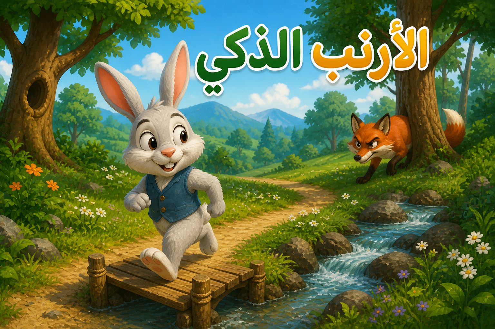

الأرنب الذكي

كان هناك أرنب صغير يعيش في الغابة. كان ذكياً جداً ويحب التفكير في الحلول. في يوم من الأيام، واجه مشكلة كبيرة ولكنه استخدم ذكاءه وحلها بسهولة.
لم يبدأ التسجيل بعد

كان هناك أرنب صغير يعيش في الغابة. كان ذكياً جداً ويحب التفكير في الحلول. في يوم من الأيام، واجه مشكلة كبيرة ولكنه استخدم ذكاءه وحلها بسهولة.